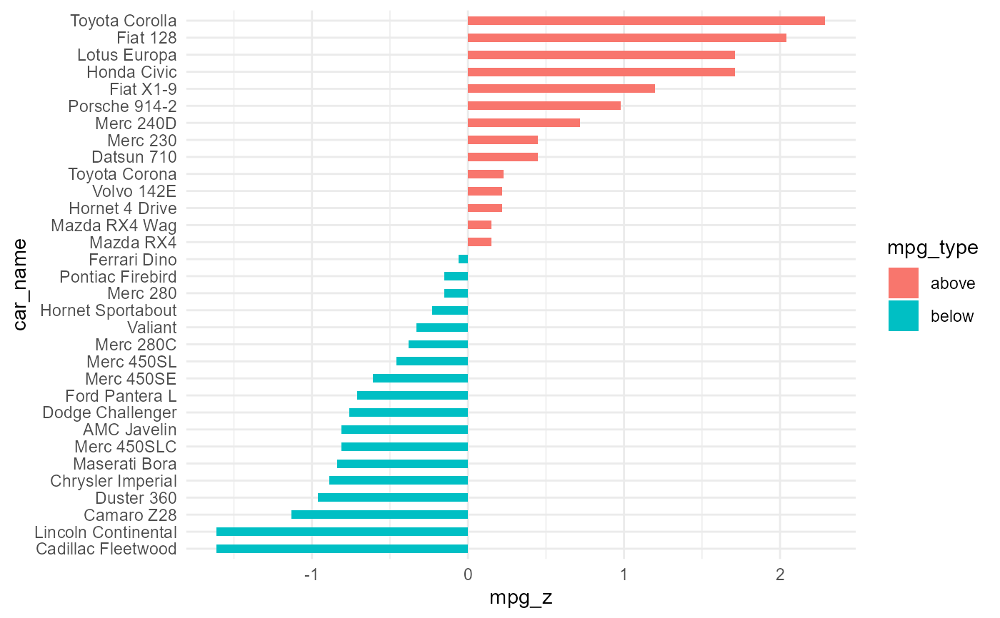

Diverging Bars is a bar chart that can handle both negative and positive
values. This can be implemented by a smart tweak with geom_bar(). But the
usage of geom_bar() can be quite confusing. That's because, it can be used to
make a bar chart as well as a histogram. Let me explain.
By default, geom_bar() has the stat set to count. That means, when you
provide just a continuous X variable (and no Y variable), it tries to make
a histogram out of the data.
In order to make a bar chart create bars instead of histogram,
you need to do two things. Set stat = identity and provide both x and y
inside aes() where, x is either character or factor and y is numeric.
In order to make sure you get diverging bars instead of just bars, make sure,
your categorical variable has 2 categories that changes values at a certain
threshold of the continuous variable. In below example, the mpg from mtcars
data set is normalized by computing the z score. Those vehicles with mpg
above zero are marked green and those below are marked red.
diverging_bar_plt(
.data,
.x_axis,
.y_axis,
.fill_col,
.plot_title = NULL,
.plot_subtitle = NULL,
.plot_caption = NULL,
.interactive = FALSE
)The data to pass to the function, must be a tibble/data.frame.
The data that is passed to the x-axis.
The data that is passed to the y-axis. This will also equal the
parameter label
The column that will be used to fill the color of the bars.
Default is NULL
Default is NULL
Default is NULL
Default is FALSE. TRUE returns a plotly plot
A plotly plot or a ggplot2 static plot
This function takes only a few arguments and returns a ggplot2 object.
suppressPackageStartupMessages(library(ggplot2))
data("mtcars")
mtcars$car_name <- rownames(mtcars)
mtcars$mpg_z <- round((mtcars$mpg - mean(mtcars$mpg))/sd(mtcars$mpg), 2)
mtcars$mpg_type <- ifelse(mtcars$mpg_z < 0, "below", "above")
mtcars <- mtcars[order(mtcars$mpg_z), ] # sort
mtcars$car_name <- factor(mtcars$car_name, levels = mtcars$car_name)
diverging_bar_plt(
.data = mtcars
, .x_axis = car_name
, .y_axis = mpg_z
, .fill_col = mpg_type
, .interactive = FALSE
)
#> Registered S3 method overwritten by 'quantmod':
#> method from
#> as.zoo.data.frame zoo
